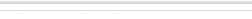
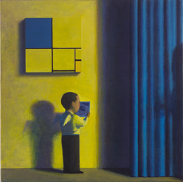
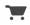
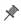
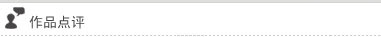
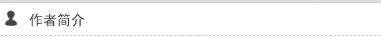

刘野
蒙德里安前的男孩
1997
布面油画
100×100cm (39.4×39.4 in.)
签名
Liu Ye 97-98
|  |
|  |  |
|---|

一个圆头圆脑的小男孩，有着一对可爱的小翅膀。光线从右边打来，旁边的布幔与光线，显示这可能是个舞台。而这个像天使的小孩仔细看着一幅静物画，上头的大背景，是蒙德里安的方块。刘野经常使用画中画，画中常见蒙德里安的方块——他以此向大师致敬，因为他喜欢蒙德里安的单纯与纯粹。我们也感觉，这认真看画的男孩，彷佛就是刘野自己，画里隐喻了一种认真与纯真。
他自己说：“一个艺术家只要寻找到自我才算完成任务了，你作品中的形象很像你。这种‘像’不是指写实的自画像，而是指某种性格，那一定会感动别人 ”。他作品中的小人儿，与他真有种难以言说的神似。
这幅画美丽、可爱、明亮，大师名作的色彩，与其它场景的色彩一致，整体感觉极其宁静和谐。作品虽然充满童趣，但却并不简单；欢悦的图像后有着一股淡淡的忧伤。用貌似欢乐的图像去表现忧伤，比用忧伤的图像去表现忧伤更深刻，更容易产生出触动观者的特殊魅力。
刘野的画极少关涉现实社会，与时代也并无关联；他只是安然地沉浸在自己营造的幻境之中，与其它当代艺术家显然不同。而这种疏离独特，正是刘野的可贵之处。

1964生于北京
1984毕业于北京工艺美校
1989毕业于中央美术学院壁画系
1994毕业于德国柏林艺术学院并获硕士学位
展览
2008
中国：面对现实／维也纳现代美术馆／奥地利
2007
中国之窗／伯尔尼美术馆／瑞士
2006
麻将：希克中国当代艺术收藏展／汉堡美术馆／德国
首届中国当代艺术年鉴／中华世纪坛美术馆／北京
Accrochage／20,21画廊／埃森/德国
诱惑／SperoneWestwater画廊／纽约
2005
刘野·金田胜一／Frank Schlag & Cie画廊／埃森 /德国
一卡通／顶层空间／北京
-
寿漆
王光乐
-

十示 94-73
丁乙
-

The sleep of reason
马克·奎安
-

我看不见我的鸡鸡
曹晖
-

紫禁城的秋天
洪磊